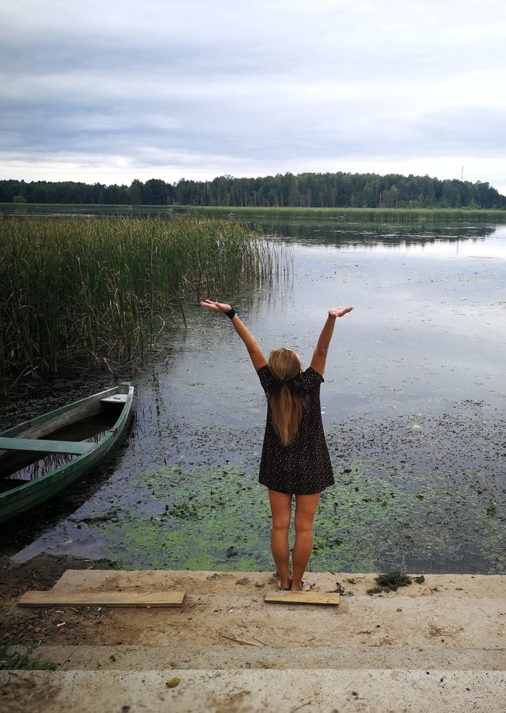

После декрета я мечтала подтянуть свое тело. Решила записаться на фитнес, и около двух лет посещала эти занятия. В школе я была освобождена от физкультуры по состоянию здоровья, и нагрузки от фитнеса для меня были чрезмерными. Как-то я прочитала про йогу. Меня это настолько затянуло, что я пошла дальше: просматривала видео на эту тему, а после нашла курсы по йоге у нас в городе. Около двух лет ходила на занятия вместе с группой. Йога кардинально отличается от фитнеса. В фитнесе тренируется только тело, а практика йоги помогает сделать себя лучше и в физическом, и в духовном смыслах.
Я преподаю хатха-йогу, используя в практике элементы различных ее направлений. На занятиях я наблюдаю за людьми и вижу, на что они способны, поэтому стараюсь каждому давать свою нагрузку. Для этого использую разные методики. Также я применяю элементы йоготерапии. Йоготерапия полезна для здоровья. Ею занимаются люди в возрасте, новички, те, кому сложно практиковать в основной группе, а также те, у кого проблемы с лишним весом. Я заметила на своем опыте, как йога меняет людей. Например, раньше мне было сложно контролировать свои эмоции, а после занятий я стала реагировать на многие вещи гораздо спокойнее. На занятиях мы учимся концентрироваться именно на йоге. Со временем человек привыкает к этому состоянию и переносит это на повседневную жизнь.
Изучать йогу можно бесконечно, в йоге важно найти своего учителя. Чтобы развиваться, я общаюсь с различными преподавателями в интернете, а также посещаю всевозможные мастер-классы. Например, недавно я ездила на курсы по йоге в Индию. Преподавателя и организатора курсов по йоге Анну Весну нашла в интернете. Мы немного пообщались, и я поняла, что хочу учиться именно у нее. В течение месяца мы жили в городе Арамболь в гостевом доме. Мы занимались интенсивно: шесть дней в неделю по шесть часов в день. Там я углубила знания, почерпнула несколько новых методик преподавания, а также познакомилась с различными видами йоги. В конце курса мы сдавали экзамен и получили сертификаты, которые дают право преподавать йогу в разных странах. В будущем я бы хотела изучить практики для беременных и детей, а также йоготерапию.
Я заметила, что сейчас появилась мода на йогу. На мой взгляд, это крайность, в которую бросаются люди. Например, в интернете продают различные вещи для занятий йогой: красивую спортивную форму, бутылочки, а по факту для занятий надо всего лишь небольшой коврик. Есть те, кто покупает это и считает, что это необходимо. Такие люди зачастую приходят на занятия для галочки, чтобы другие их оценили, и спустя пару месяцев забрасывают.
{kind=link}
{kind=link}
{kind=link}
{kind=link}